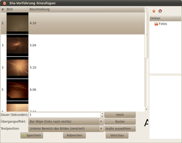

Mistelix
Archivierte Anleitung
Dieser Artikel wurde archiviert, da er - oder Teile daraus - nur noch unter einer älteren Ubuntu-Version nutzbar ist. Diese Anleitung wird vom Wiki-Team weder auf Richtigkeit überprüft noch anderweitig gepflegt. Zusätzlich wurde der Artikel für weitere Änderungen gesperrt.
Zum Verständnis dieses Artikels sind folgende Seiten hilfreich:
Mistelix  ist ein Programm, mit dem Diashows und Präsentationen zur Wiedergabe auf dem Computer, sowie DVDs aus den erzeugten Präsentationen ("Projekten") erstellt werden können. Mistelix unterstützt nahezu alle Formate und erlaubt es, DVDs mit eigenen Hintergrundbildern zu erzeugen.
ist ein Programm, mit dem Diashows und Präsentationen zur Wiedergabe auf dem Computer, sowie DVDs aus den erzeugten Präsentationen ("Projekten") erstellt werden können. Mistelix unterstützt nahezu alle Formate und erlaubt es, DVDs mit eigenen Hintergrundbildern zu erzeugen.
Die letzte Version stammt aus dem Jahr 2011. Zwischenzeitlich wurde die Weiterentwicklung eingestellt. Alternativen finden sich in den Artikel Diashows erstellen und Präsentationen.
Installation¶
Mistelix ist bis einschließlich Ubuntu 14.04 in den offiziellen Paketquellen enthalten. Um das Programm zu installieren [1], werden die folgenden Pakete benötigt:
mistelix (universe)
gstreamer0.10-ffmpeg
gstreamer0.10-fluendo-mp3 (universe, optional für die Unterstützung von MP3)
dvdauthor (universe, optional)
 mit apturl
mit apturl
Paketliste zum Kopieren:
sudo apt-get install mistelix gstreamer0.10-ffmpeg gstreamer0.10-fluendo-mp3 dvdauthor
sudo aptitude install mistelix gstreamer0.10-ffmpeg gstreamer0.10-fluendo-mp3 dvdauthor
Das Programm kann dann als mistelix gestartet werden [2].
Bedienung¶
Nach dem Programmstart legt man fest, welche Art von Vorführung man erstellen und als "Projekt" speichern möchte.
Hinweis:
Projekte werden nicht automatisch abgespeichert. Als Speicherort verwendet das Programm den Ordner mistelix im Homeverzeichnis.
Es öffnet sich jeweils das Fenster "Neues Mistelix-Projekt".
Dia-Vorführung¶
 Bilder können nach Klick auf die Schaltfläche "Dia-Vorführung hinzufügen" und Wahl des gewünschten Verzeichnisses durch Hineinziehen mit der Maus hinzufügt werden. Zu jedem Bild kann
eingeblendeter Text/Titel
Anzeigedauer
Übergangseffekt
Textposition
Hintergrundmusik über "Audio auswählen ..."
festgelegt werden. Es gibt eine Vorschaufunktion. Darüber hinaus sind Angaben zu Projektname, Ausgabeordner und gewünschter Auflösung möglich.
Videos können in diesem Modus leider nicht hinzugefügt werden.
Speichern¶
Erst über "Projekt --> Projekt erstellen" wird mit Klick auf die Schaltfläche "Erstellen" tatsächlich das Projekt gespeichert.
DVD-Projekt¶
Hier können mit der Schaltfläche
"Videos hinzufügen" Videos oder
"Dia-Vorführung hinzufügen" bereits erstellte Dia-Vorführungen eingeladen werden.
Im Menüpunkt "Bearbeiten" kann man mit "DVD-Menü-Thema auswählen ..." das Aussehen des DVD-Hauptmenüs (Hintergrundbild und die Art von Schaltflächen) festlegen.
Im Menüpunkt "Ansicht" kann man den "TV-sicheren Bereich anzeigen" lassen.
Ein Projekt kann auch mit F5 erstellt werden. Projektname, Ausgabeordner und gewünschtes Videoformat (PAL/NTSC) sowie Seitenverhältnis können angegeben werden.
Menüleiste¶
Unter "Dateien" findet man außer den üblichen Funktionen noch eine Liste der zuletzt geöffneten Dateien.
Unter "Bearbeiten" gibt es
"Einstellungen" und
" Erweiterungen "
Unter "Projekt" kann man sich die Eigenschaften des aktuellen Projektes anzeigen lassen
Unter "Hilfe" findet sich
"Abhängigkeiten und Anforderungen von Mistelix überprüfen"
"Online-Hilfe"
Einstellungen¶
Unter dem Menüpunkt "Bearbeiten -> Einstellungen" können neben diversen Pfaden die Größe der Vorschaubilder, vorgegebene Übergangseffekte sowie die Anzeigedauer (Zeit) festgelegt werden.
Erweiterungen¶
Der Menüpunkt "Bearbeiten -> Erweiterungen verwalten" zeigt die installierten Übergangseffekte sowie sonstige Effekte an. Ferner können hier zusätzliche Erweiterungen installiert werden, so es sie gibt.
Aussehen¶
Das von Mistelix verwendete Design (Theme) enthält:
Ein Hintergrundbild
Das Erscheinungsbild, wie eine angewählte Schaltfläche hervorgehoben wird
Themes werden in der Datei Themes.Xml, standardmässig zu finden in /usr/share/mistelix. festgelegt. Eine solche Definition sieht beispielsweise so aus:
<Theme> <name>Beach</name> <menu_background>beach_mainmenu.jpg</menu_background> <button_select>beach_menu_normal.svg</button_select> <button_highlight>beach_menu_highlight.svg</button_highlight> </Theme>
DVD erstellen¶
Das Video wird im Verzeichnis ~/mistelix/dvd/ abgespeichert und kann direkt auf DVD gebrannt werden. Um ein ISO-Abbild (.iso) zu erstellen, kann genisoimage verwendet werden:
genisoimage -dvd-video -udf -o dvd.iso dvd

- Erstellt mit Inyoka
-
 2004 – 2017 ubuntuusers.de • Einige Rechte vorbehalten
2004 – 2017 ubuntuusers.de • Einige Rechte vorbehalten
Lizenz • Kontakt • Datenschutz • Impressum • Serverstatus -
Serverhousing gespendet von